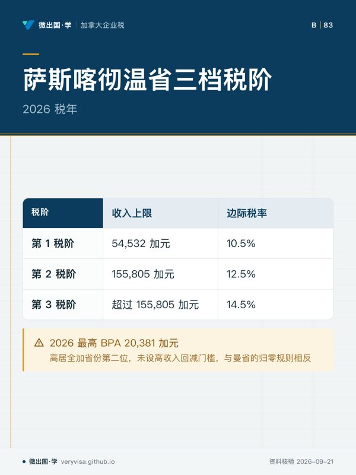
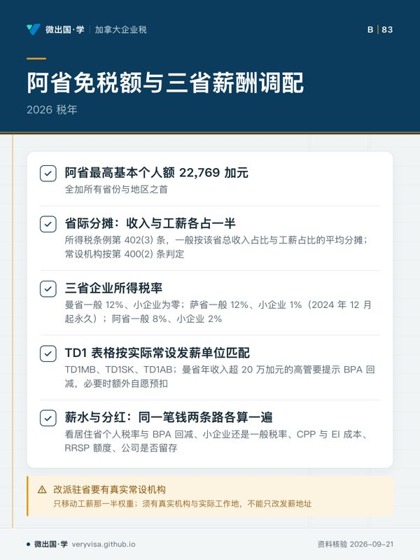

核实日期：2026-09-10｜本页适用口径：2026 税年加拿大企业在草原三省（Prairie Provinces，即阿尔伯塔省、萨斯喀彻温省与曼尼托巴省）设立常设机构（PE）、调配管理技术团队或设立联合运营分支时的企业工薪权重分摊（T2 Schedule 5）、跨省个人所得税预扣（Payroll Remittance）及省际薪酬税负综合平衡。下一次复核：2027-01-31；三省财政厅或 CRA 发布年度工薪指南时提前复核。本文涉及金额除特别注明外均为加元。
加拿大西部草原三省——阿尔伯塔省（Alberta, AB）、萨斯喀彻温省（Saskatchewan, SK）与曼尼托巴省（Manitoba, MB），在地理与产业结构上构成了紧密协作的经济走廊。从卡尔加里与埃德蒙顿的总部研发与能源金融，到萨斯卡通与里贾纳的矿业资源与农业科技，再到温尼伯的先进制造与全国物流枢纽，大批加拿大控股公司与跨省集团在三省同时设立子公司、车间、仓库或区域办事处。根据加拿大所得税条例（Income Tax Regulations）第 400(2) 条，企业在某省有固定营业场所（如办事处、分支、工厂、车间、仓库），即在该省构成常设机构（Permanent Establishment）；员工或代理人在当地有代企业签约的一般授权，或持有企业存货并经常据以接单发货的，也视为在当地设有常设机构。
然而，当企业在草原经济带展开多省运营时，财会部门不仅需要在 T2 附表 5（Schedule 5）上依销售额与工资总额分摊企业应税所得，更必须面对草原三省在雇员薪酬税制上截然相反的政策取向：曼尼托巴省采取了底档未指数化冻结、中产门槛极早触顶（应税所得超过 10 万加元即进入 17.4% 顶档）以及针对高收入阶层的基本个人额（BPA）断崖式回减机制；与此形成鲜明对比的是，萨斯喀彻温省维持着高达 15.5 万加元的宽幅中间档与 14.5% 的温和顶档税率，并提供全加第二高的 BPA；而阿尔伯塔省更是坐拥全加最高的省级基本个人额。如果跨省企业的人力资源与财税团队未能透彻理解这三套参数的碰撞，将在跨省雇员派驻待遇、TD1 预扣合规及高管税后留存测算中遭遇重大失误。
一、曼尼托巴省税制特征：税阶停滞、17.4% 快速触顶与高管 BPA 渐进归零
在草原三省中，曼尼托巴省的个人所得税制度对高薪雇员与企业主的税负边际递增最为剧烈。其核心制度特征在于三档累进阶梯在 2025 至 2026 税年保持了参数未指数化的停滞状态，同时引入了针对高收入管理层的免税额惩罚性回减。
根据曼尼托巴省官方税法及 CRA 核准参数，2026 税年曼省三档法定税阶演化明细如下： - 第 1 税阶： - 收入上限：2024 税年为 47,000 加元；曼省自 2025 税年起暂停税阶指数化，2025、2026 税年均为 47,000 加元（曼省政府个人所得税页、CRA T4127 2026 年 1 月版与 7 月版一致）。 - 边际税率：跨年稳定维持在 10.8%。 - 第 2 税阶： - 收入上限：2024 税年为 100,000 加元；2025、2026 税年同样冻结在 100,000 加元。 - 边际税率：跨年维持 12.75% 不变。 - 第 3 税阶： - 边际税率：对超过 100,000 加元的全部应税所得，直接课征高达 17.4% 的省顶格税率（跨年维持 17.4% 不变）。
来源说明：本文曼省门槛以现行省法为准。曼省《所得税法》（C.C.S.M. c. I10，官方网站版本注明现行至 2026-09-25）第 4.1(2) 条规定，2024 税年及以后，个人基本税按应税所得计算：超过 47,000 加元部分另加 1.95%，超过 100,000 加元部分再加 4.65%（即 10.8%、12.75%、17.4% 三档）；第 4.1(3) 条的指数化只适用于 2017 至 2023 税年的旧门槛，所以 2024 年以后这两个数不随通胀调整。曼省政府个人所得税页、CRA T4032MB 与 T4127（2026 年 1 月版、7 月版）与省法一致。CRA「当年税率与收入档」年度汇总页对曼省 2026 年列的是 47,564 与 101,200 加元，与省法条文不同，两者尚未一致；本文按省法条文取数，申报时仍应核对当年 MB428 表。
曼省这套税阶对企业用工薪资具有极强的穿透效应：应税所得一旦超过 100,000 加元（年薪在这个水平上下的中高层员工，扣除 RRSP 等之后常落在这一区间），超出部分即适用 17.4% 的顶档税率，这一起征点远低于全国绝大多数省份（例如安省或阿省的顶档门槛均在 20 万至 30 万加元以上）。
更为严苛的是基本个人额的设计。根据 的权威参数核定： - 曼尼托巴省 2026 税年最高基本个人额（BPA）为 15,780 加元。 - 高收入回减规则（Phase-out）：自 2025 税年起，当纳税人净收入位于 200,000 加元至 400,000 加元 区间时，该 15,780 加元的基本个人额将逐步被削减；一旦净收入达到或超过 400,000 加元，曼省 BPA 彻底归零！ - 这意味着在曼省净收入达到 40 万加元的企业主与高管（BPA 回减按净收入计算，不是按年薪），不仅全部增量收入承受 17.4%（省）+ 33%（联邦）= 50.4% 的综合边际税率，连原本底层的 15,780 加元免税额度也全额丧失。雇主扣缴时，员工交了 TD1MB 的按其申报的基本个人额，没交的按 CRA T4127 的曼省 BPA 动态公式计算；对预计净收入超过 20 万加元的高管，要提醒回减对年末税款的影响。
二、萨斯喀彻温省税制架构：宽幅第二档、14.5% 温和顶档与两万级高免税额
与曼尼托巴省形成鲜明制度反差的是相邻的萨斯喀彻温省。萨省在个人所得税设计上注重保持中产阶层的税率稳定与对专业技术人才的吸引力，呈现出「门槛逐年指数化调升、中间档宽广、顶档税率温和且免税基数充裕」的清晰特征。

依据萨省官方规程及 CRA 2026 税年核定参数，萨省三档税阶及演化明细如下： - 第 1 税阶： - 收入上限：2024 税年为 52,057 加元；2025 税年指数化至 53,463 加元；2026 税年指数化调整为 54,532 加元。 - 边际税率：稳定维持在 10.5%。起征门槛显著高于曼省的 47,000 加元，且税率低 0.3 个百分点。 - 第 2 税阶： - 收入上限：2024 税年为 148,734 加元；2025 税年为 152,750 加元；2026 税年指数化调整为 155,805 加元。 - 边际税率：稳定维持在 12.5%。 - 萨省第 2 税阶横跨 54,532 加元至 155,805 加元，区间宽度超过 10 万加元！这意味着绝大部分现场工程师、项目经理与资深骨干在收入爬升期均稳固享受 12.5% 的适中边际税率，绝不会像曼省雇员那样在应税所得超过 10 万加元时即被推入顶档。 - 第 3 税阶： - 边际税率：对超过 155,805 加元的部分征收 14.5% 的省顶格税率（跨年维持 14.5% 不变）。 - 萨省的 14.5% 顶档税率在加拿大各省中极具竞争力（比曼省的 17.4% 整整低了 2.9 个百分点）。
在基本个人额方面，根据 的核定参数： - 萨斯喀彻温省 2026 税年最高基本个人额高达 20,381 加元！ - 这一数字高居全加省份第二位，且萨省法案未设立针对高收入者的回减门槛。高薪员工无论年收入达到 15 万还是 50 万加元，均能全额享受 20,381 加元对应的 10.5% 省税非退还性抵免（Tax Credit）。
三、阿尔伯塔高免税额对照与草原三省常设机构薪酬调配
在评估草原走廊的薪酬税负时，必须将阿尔伯塔省的核心参数纳入联动视野。依据 的权威参数： - 阿尔伯塔省（AB）2026 税年最高基本个人额达到 22,769 加元，雄踞全加拿大所有省份与地区之首！ - 结合阿省 2026 年六档累进（61,200 加元以下 8%，其上依次为 10%、12%、13%、14%、15%，阿省政府个人所得税页），阿尔伯塔省为企业基层用工与高管常设提供了全加最为宽松的免税底座。
将草原三省置于同一运营图景下，企业集团在常设机构设置与工薪治理上应把握以下三大实务要点：
-
常设机构工薪比例对企业税 T2 Schedule 5 的传导机制： 按所得税条例第 402(3) 条，企业在两个以上省份设有常设机构时，一般情形下某省分得的应税所得，是「该省常设机构的总收入占比」与「该省常设机构员工工薪占比」两者的平均；工薪是两个分子之一，不是唯一分子（总收入为零或工薪为零时另有规定）。常设机构本身按第 400(2) 条判定。曼尼托巴省的企业一般所得税率为 12%（小企业税率为零，业务限额 500,000 加元）；萨省一般税率 12%，小企业税率经 2024 年 12 月《萨省可负担法》永久定为 1%，适用于首 600,000 加元合格业务收入；阿省一般税率为 8%、小企业税率 2%。把高薪管理层实际派驻到阿省或萨省常设机构，会同时改变个人端的税阶与 BPA（阿省 22,769、萨省 20,381）和公司端的分摊比例，但分摊只移动工薪那一半的权重，而且要有真实的常设机构与实际工作地为前提，不能只改发薪地址。
-
跨省工薪源泉预扣表格（TD1MB、TD1SK、TD1AB）合规校验： 雇主发薪系统必须根据雇员实际常设发薪单位（Establishment where the employee reports for work）匹配精确的表格版本：
- 曼省员工（TD1MB）：基础额录入 15,780 加元，但对预计净收入超过 20 万加元的高管，必须在年终综合测算中提示 BPA 回减影响，必要时根据雇员申请额外自愿预扣（Additional Tax Deduction），防止次年春季出现巨额税款缺口与滞纳利息。
- 萨省员工（TD1SK）：全额享受 20,381 加元免税基数，工薪软件直接套用 10.5%、12.5% 与 14.5% 的三档公式。
-
阿省员工（TD1AB）：直接适用 22,769 加元基数，享受全加最高的免征空间。
-
管理层分红与薪水混合分配在三省的净值差异： 薪水与分红怎么配，不能只看省份下结论，要把同一笔钱按两条路径各算一遍再比：① 企业主本人的居住省与预计全年应税所得，对应哪一档个人税率，曼省净收入 20 万至 40 万加元还会回减 BPA；② 这笔利润在公司层面按小企业税率（曼省为零、萨省 1%、阿省 2%）还是一般税率（曼、萨 12%，阿省 8%）纳税，分红相应是非合格还是合格分红；③ 发薪水带来的 CPP、EI 与雇主成本，以及 RRSP 额度等个人需要；④ 公司是否要留存资金再投资。曼省顶档 17.4% 起于 100,000 加元，大额薪水边际成本高；萨省顶档 14.5%、阿省 BPA 最高，但结论仍取决于上面四项的实际数字，由会计师按当年参数测算。
综上所述，草原三省绝非铁板一块的均质法域。企业在跨省设立常设机构时，必须深刻把握曼省冻结税阶与 BPA 归零机制、萨省宽幅中产档与高免税额、以及阿省顶格免税基准之间的结构性分歧，方能在企业所得税分摊与高管薪酬激励中实现严谨合规与商业价值的兼顾。
本页知识卡
不看正文也能拿到这一节的核心内容：先看导读，再看图。点图放大，左右翻页。
- 先看先看顶档门槛：应税所得超过 100,000 加元的部分适用 17.4%。
- 易漏回减看净收入：超过 20 万加元开始减，到 40 万加元减完。
- 下一步去讲解页对照萨省与阿省的免税额。

- 先看先看第 2 档跨度：从 54,532 到 155,805 加元都按 12.5%。
- 易漏萨省免税额不随收入回减，高薪员工也全额适用。
- 下一步去讲解页看三省常设机构薪酬如何调配。

- 先看先分清个人税抵免和公司税分配是两层计算。
- 易漏不能按省份直接下结论，要用自己的数字比两种发放方式。
- 下一步去讲解页看三省税阶的完整对照。